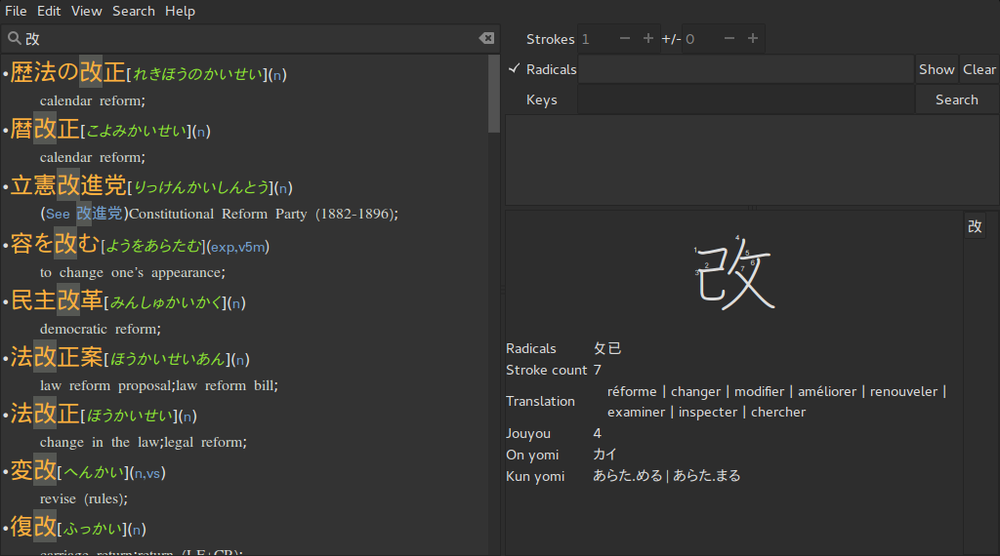
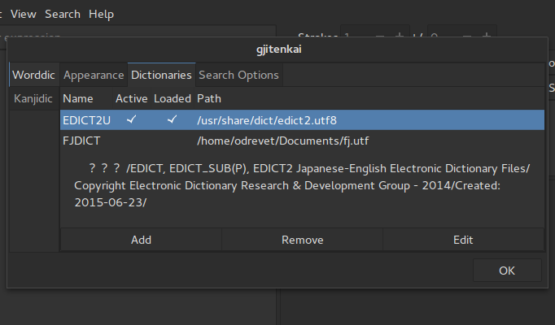

Gjiten kai - グジテン改
A rewrite of Gjiten, a japanese dictionary for Gnome.
View on GitHub
Read the Wiki
Windows Installer
Edict Dictionary
Screenshots
Search

Preference Dialog/Worddic dictionaries

Preference Dialog/Worddic appearance